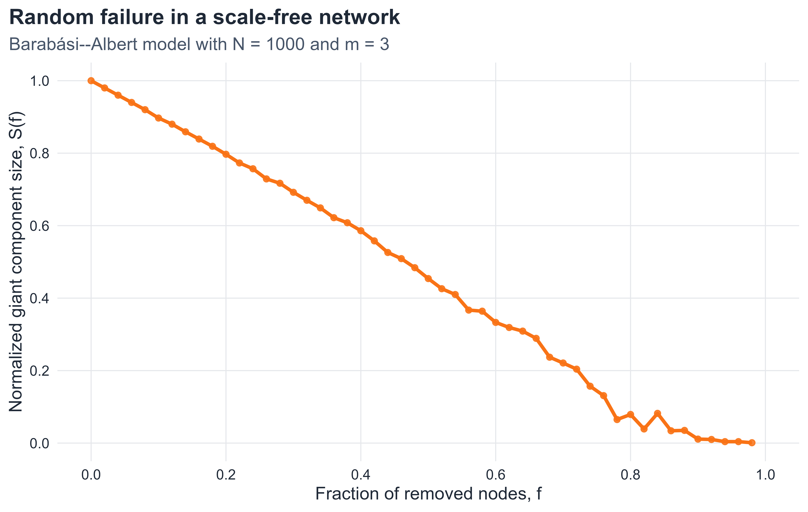
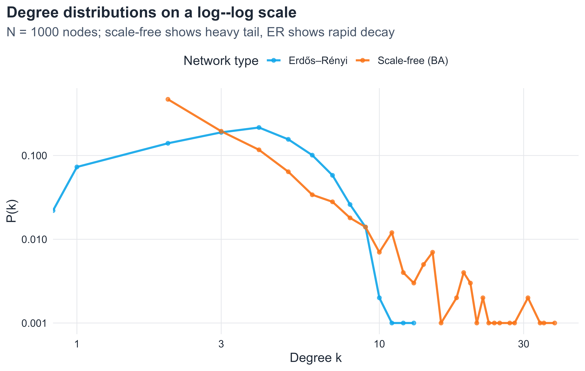
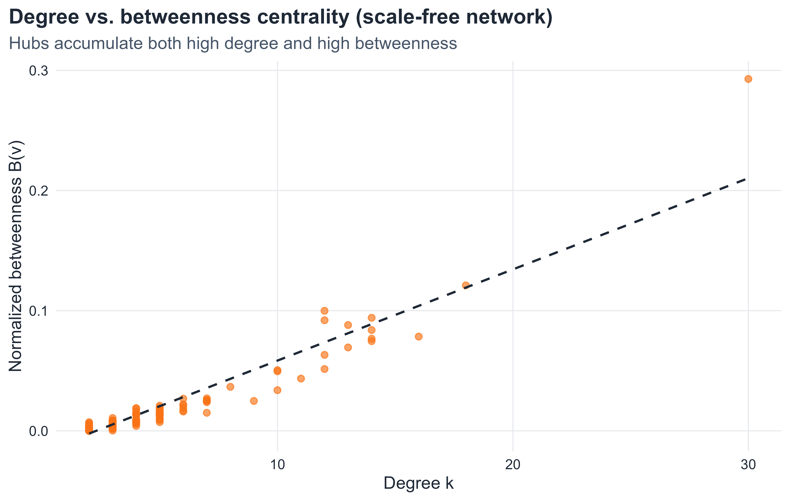
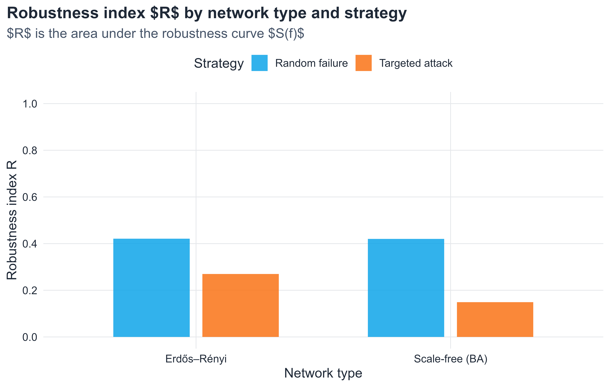

Percolation, Failure, and Resilience in Complex Networks
8.1 Introduction
All previous chapters have studied how networks are built and what structural properties they possess. This chapter asks a different question: what happens when a network is damaged?
Real networks — the internet, power grids, transportation systems, biological interaction networks — are subject to failure. Nodes can break down, edges can be severed, and components can become isolated from the rest of the system. The degree to which a network maintains its basic functionality despite such damage is called network robustness(Newman 2010; Albert, Jeong, and Barabási 2000).
Two fundamentally different modes of failure must be distinguished from the outset:
Random failures: nodes or edges fail without targeting any particular structural property. A router breaks down due to hardware malfunction; a power line fails due to weather. These failures are essentially random with respect to the network’s topology.
Targeted attacks: failures are directed at the most important nodes. A deliberate attack on infrastructure targets the highest-degree hubs, the most central nodes, or the most critical bridges.
These two modes produce strikingly different outcomes depending on the type of network. In particular, scale-free networks and Erdős–Rényi random graphs respond to damage in ways that are almost opposite to one another. Understanding this asymmetry is one of the central insights of network robustness theory (Albert, Jeong, and Barabási 2000; Cohen et al. 2000; Callaway et al. 2000).
8.2 Learning goals
By the end of this chapter, it should be possible to:
define network robustness in terms of the giant component
distinguish random failure from targeted attack
formulate robustness as a percolation problem
state and apply the Molloy–Reed criterion for the existence of a giant component
derive the critical removal threshold for Erdős–Rényi networks
explain why scale-free networks are robust to random failures but vulnerable to targeted attacks
compute and plot robustness curves numerically in R
discuss real-world implications of network robustness
8.3 Chapter roadmap
TipNotation convention used in this chapter
Throughout the chapter, f denotes the fraction of removed nodes, q denotes the fraction of removed edges, and S(f) denotes the size of the giant component normalized by the original network size.
The chapter begins with robustness as a connectivity problem and introduces percolation as the natural mathematical framework. It then develops the Molloy–Reed criterion, applies it to Erdős–Rényi networks, and uses that comparison to explain why scale-free networks behave so differently under random failure and targeted attack. The later sections broaden the picture by considering bond percolation, cascading failures, centrality-based attacks, and alternative robustness measures.
8.4 Robustness and the giant component
What does it mean for a network to be robust?
The concept of robustness in a network context is tied to connectivity. The most widely used measure of functional integrity is the size of the giant component — the largest connected component — after a fraction f of nodes (or edges) have been removed.
Definition 8.1 The robustness of a network under a removal process is characterized by the relative size of the giant component S as a function of the fraction of removed nodes f:
S(f) = \frac{|G_{\text{giant}}(f)|}{N},
where N is the number of vertices in the original network and |G_{\text{giant}}(f)| is the number of vertices in the largest connected component after removal.
This definition measures the surviving giant component relative to the original system size. That convention is standard in robustness studies because it tracks how much of the original network remains functionally connected. One may also normalize by the number of surviving vertices, but that answers a different question (Newman 2010; Callaway et al. 2000).
When S(f) becomes very small and no component of order N remains, the network has lost its global connectivity. The corresponding transition point is called the critical thresholdf_c.
NoteMain idea
Robustness is measured by how large a fraction f of nodes must be removed before the giant component disintegrates. A larger f_c means greater robustness.
each node is independently retained with probability 1 - f, or removed with probability f,
edges between removed nodes are also removed,
the question is whether a giant component survives in the remaining subgraph.
This is precisely the model for random failure. Targeted attack requires a different formulation, studied later in this chapter.
The critical percolation thresholdf_c is the value of f at which the giant component disappears in the large-network limit:
S(f) > 0 \text{ for } f < f_c, \qquad S(f) = 0 \text{ in the } N\to\infty \text{ sense for } f > f_c.
For finite simulated networks, the drop is not perfectly sharp and S(f) usually does not become exactly zero at the theoretical threshold. Instead, one observes a rounded transition due to finite-size effects.
8.5 The Molloy–Reed criterion
Degree distribution moments
A key quantity is the ratio of the second moment to the first moment of the degree distribution. Let p_k denote the probability that a randomly chosen node has degree k.
Define:
\langle k \rangle = \sum_k k \, p_k, \qquad \langle k^2 \rangle = \sum_k k^2 \, p_k.
Criterion for the giant component
Theorem 8.1Molloy–Reed criterion (configuration-model form). For a large, locally tree-like random network with degree distribution \{p_k\}, a giant component exists when (Molloy and Reed 1995; Newman, Strogatz, and Watts 2001)
\sum_k k(k-2)p_k > 0,
which is equivalent to
\kappa = \frac{\langle k^2 \rangle}{\langle k \rangle} > 2.
The quantity \kappa = \langle k^2 \rangle / \langle k \rangle is closely related to the mean excess degree. It measures how many additional edges are expected when one reaches a node by following a random edge.
Intuitively: when following an edge to a neighbor, the expected number of further edges from that neighbor is \langle k^2 \rangle / \langle k \rangle - 1. When this quantity exceeds 1 — that is, \kappa > 2 — the local neighborhoods grow and a giant component forms.
NoteInterpretation
The condition \kappa > 2 is equivalent to requiring that a random walk on the network starting from an edge endpoint has, on average, more than one onward step. This branching condition is the network analogue of the subcritical/supercritical transition in branching processes.
Why the second moment matters
A useful teaching point is that robustness is not controlled only by the average degree \langle k \rangle. It also depends strongly on how unevenly degree is distributed.
Consider two networks with the same mean degree, say \langle k \rangle = 4:
one network has degrees tightly concentrated around 4,
another has many low-degree vertices and a few very large hubs.
The second network has a much larger value of \langle k^2 \rangle, because squaring amplifies the contribution of hubs. Since
a larger second moment usually means a larger threshold against random failure. This is the mathematical reason heterogeneous networks can be surprisingly robust.
ImportantPedagogical takeaway
Two networks can have the same average degree but very different robustness. The crucial quantity is not only how many links vertices have on average, but how unevenly those links are distributed.
Stability condition under random removal
When nodes are removed independently with probability f, the effective degree distribution changes. A node of original degree k retains each neighbor independently with probability 1 - f, so its residual degree follows a \text{Binomial}(k, 1-f) distribution.
After removal, the effective first and second moments become:
This formula is exact for locally tree-like networks (networks with negligible number of short cycles in the large-N limit) and provides a good approximation for many real networks (Cohen et al. 2000; Newman, Strogatz, and Watts 2001; Newman 2010).
With the general threshold formula in hand, the next step is to apply it to concrete graph families. The Erdős–Rényi model is the natural starting point because its degree distribution is analytically tractable and serves as a benchmark for more heterogeneous networks.
8.6 Robustness of Erdős–Rényi networks
Degree distribution and moments
In the Erdős–Rényi model G(N, p) with large N and fixed \langle k \rangle = p(N-1) \approx pN, the degree distribution is approximately Poisson (Newman 2010; Barabási and Pósfai 2016):
p_k \approx e^{-\langle k \rangle} \frac{\langle k \rangle^k}{k!}.
For the Poisson distribution, the moments satisfy:
\langle k^2 \rangle = \langle k \rangle^2 + \langle k \rangle,
and therefore:
\kappa_0 = \frac{\langle k^2 \rangle}{\langle k \rangle} = \langle k \rangle + 1.
This is a clean result. For an Erdős–Rényi network with average degree \langle k \rangle:
when \langle k \rangle = 2, the threshold is f_c = 1/2: removing half the nodes destroys the giant component.
when \langle k \rangle = 5, the threshold is f_c = 4/5: 80\% of nodes must be removed.
as \langle k \rangle \to \infty, f_c \to 1: a very dense ER network is highly robust.
The ER network thus has a finite, deterministic robustness threshold under random failure. It is neither extremely robust nor extremely fragile. This makes ER a useful baseline: once we turn to scale-free networks, the contrast becomes much sharper.
Figure 8.1: Robustness curves for Erdős–Rényi networks under random node removal. Each curve corresponds to a different average degree \langle k \rangle. Dashed vertical lines indicate the theoretical critical thresholds f_c = 1 - 1/\langle k \rangle. The giant component size is normalized by the original network size.
As shown in Figure 8.1, the decline of the giant component becomes slower as the average degree increases. This is exactly what the formula f_c^{\text{ER}} = 1 - 1/\langle k \rangle predicts: denser Erdős–Rényi networks can tolerate a larger fraction of random node removals before losing global connectivity.
The dashed vertical lines mark the theoretical thresholds, while the simulated curves remain smooth rather than perfectly sharp. That mismatch is expected. The formula describes the large-network transition, whereas the plotted curves come from finite simulations, where the breakdown is rounded by finite-size fluctuations.
The next question is whether this behavior is typical of all sparse networks. The answer is no. Once degree heterogeneity becomes extreme, the robustness picture changes qualitatively.
Power-law degree distribution and diverging moments
For a scale-free network with degree distribution p_k \sim C k^{-\gamma}, the behavior of the moments \langle k \rangle and \langle k^2 \rangle depends critically on the exponent \gamma(Barabási and Albert 1999; Albert and Barabási 2002; Newman 2010).
For \gamma > 3: both \langle k \rangle and \langle k^2 \rangle are finite.
For 2 < \gamma \leq 3: \langle k \rangle is finite but \langle k^2 \ranglediverges as N \to \infty.
For \gamma \leq 2: both moments diverge.
The key case for many real networks is 2 < \gamma \leq 3. In this regime:
\kappa_0 = \frac{\langle k^2 \rangle}{\langle k \rangle} \to \infty \quad \text{as } N \to \infty.
Infinite robustness to random failure
Substituting \kappa_0 \to \infty into the critical threshold formula:
This is a remarkable result. For a scale-free network with 2 < \gamma \leq 3, the critical threshold under random failure approaches 1 in the large-N limit. This means that no finite fraction of random node removals can destroy the giant component(Cohen et al. 2000; Newman, Strogatz, and Watts 2001).
NoteError tolerance in scale-free networks
Scale-free networks are almost perfectly robust to random failures. Because most nodes have very small degree, a randomly chosen node is almost certainly not a hub. The hubs — which hold the network together — are rarely hit by chance.
Albert, Jeong, and Barabási highlighted this phenomenon as error tolerance: the ability to withstand random failures, while contrasting it sharply with targeted attack vulnerability (Albert, Jeong, and Barabási 2000).
NoteFinite-size caveat
The statement f_c \to 1 is asymptotic. In a simulated Barabási–Albert network with a few hundred or a few thousand nodes, the threshold is still below 1, and the robustness curve is rounded rather than singular. It is therefore better to say that scale-free networks are highly robust to random failures, not literally indestructible in finite size.
Simulation: random failure in a Barabási–Albert network
The asymptotic result f_c \to 1 is easier to understand after seeing a direct simulation. A Barabási–Albert (BA) network is a convenient classroom model of scale-free structure because it produces a heavy-tailed degree distribution with a small number of hubs and many low-degree vertices.
Show code
set.seed(123)g_ba_rf <-sample_pa(n =1000, m =3, directed =FALSE)df_ba_rf <-simulate_robustness_full(g_ba_rf, strategy ="random", steps =50)ggplot(df_ba_rf, aes(x = f, y = S)) +geom_line(color = course_cols$coral, linewidth =1.2) +geom_point(color = course_cols$coral, size =1.7, alpha =0.85) +labs(title ="Random failure in a scale-free network",subtitle ="Barabási--Albert model with N = 1000 and m = 3",x ="Fraction of removed nodes, f",y ="Normalized giant component size, S(f)" ) +scale_x_continuous(limits =c(0, 1), breaks =seq(0, 1, 0.2)) +scale_y_continuous(limits =c(0, 1), breaks =seq(0, 1, 0.2))

Figure 8.2: Robustness curve for a Barabási–Albert scale-free network under random node removal. Because random failures usually hit low-degree vertices rather than hubs, the giant component declines gradually.
As shown in Figure 8.2, the giant component decreases much more slowly than one might expect from a homogeneous random graph with similar average degree. The reason is structural: random deletion samples vertices almost uniformly, but the network’s connectivity is distributed very non-uniformly. Most removals hit peripheral vertices, while the hubs that knit the network together survive for a long time.
This figure should not be overinterpreted as proving that a finite scale-free network is immune to random failure. The decline is still visible, and for sufficiently large f the giant component eventually collapses. The correct interpretation is more careful: compared with homogeneous networks, the onset of fragmentation is strongly delayed.
Simulation: different scale-free regimes under random failure
A deeper point is that not all scale-free networks behave in exactly the same way. The robustness depends on the power-law exponent \gamma. Smaller values of \gamma produce heavier tails, more extreme hubs, and therefore a larger second moment \langle k^2 \rangle.
Figure 8.3: Random-failure robustness curves for scale-free networks with different degree exponents. Smaller values of \gamma produce heavier tails and greater robustness because connectivity is concentrated in hubs that are unlikely to be removed at random.
As shown in Figure 8.3, the curve for smaller \gamma stays higher for longer. This reflects the heavier tail of the degree distribution: when \gamma is small, a few extremely large hubs dominate connectivity, so random failure tends to remove many low-degree vertices before it reaches the structural core of the network.
The comparison is also a useful correction to an overly simple slogan such as “scale-free networks are robust.” A more accurate statement is that robustness under random failure depends on the degree exponent and on network size. Scale-free structure is not a single regime, and Figure 8.3 makes that dependence visible.
Catastrophic vulnerability to targeted attack
The situation reverses completely when failures are targeted at the highest-degree nodes.
Under a targeted attack strategy:
nodes are removed in decreasing order of degree,
in a static attack, the ranking is computed once from the original network,
in an adaptive attack, degrees are recalculated after each removal.
Because the hubs of a scale-free network carry a disproportionately large fraction of edges, removing even a small number of them causes \langle k^2 \rangle to drop sharply. Once the high-degree tail is truncated, the network rapidly loses the heterogeneity that previously protected it against random failure.
For this reason, the critical fraction under targeted attack is typically much smaller than under random failure. In finite scale-free networks, it is common to observe severe fragmentation after removing only a few percent of the top hubs, although the exact threshold depends on network size, attack rule, and degree exponent.
NoteAttack vulnerability in scale-free networks
Scale-free networks display a striking asymmetry: highly tolerant to random failures, yet extremely sensitive to attacks on their hubs. This is the Achilles heel of scale-free structure.
Figure 8.4: Robustness comparison of a scale-free Barabási–Albert network and an Erdős–Rényi network under random failure (solid lines) and static degree-based attack (dashed lines). Both networks have N = 500 and comparable average degree.
As shown in Figure 8.4, this comparison condenses the central message of the chapter into a single picture. Under random failure, the scale-free curve stays above the ER curve because random deletion rarely removes the hubs. Under targeted attack, the ordering reverses: the BA network fragments dramatically once the highest-degree vertices are removed, while the ER network degrades more steadily because it has no similarly dominant hubs.
It is also useful to compare the gap between the two curves inside each network family. In the ER case, the random-failure and targeted-attack curves are different, but not radically so. In the scale-free case, the separation is much larger. That large internal gap is the geometric expression of the famous robustness asymmetry of scale-free structure: protection against random errors comes from the same hubs that create extreme vulnerability under deliberate attack.
8.8 Static versus adaptive attack
The previous simulation uses a static degree ranking for the attack curve: for each chosen fraction f, the nodes with the largest degrees in the original graph are removed. This is useful for a first comparison, but in many robustness studies one also considers an adaptive attack, where degrees are recalculated after each deletion. Adaptive attacks are usually more destructive because the identity of the most important remaining node can change during the attack. This distinction is worth showing explicitly, since students often assume that “remove the top hubs” has only one meaning.
Figure 8.5: Static versus adaptive degree-based attack on a Barabási–Albert network. Recomputing degrees after each deletion usually fragments the network more rapidly.
As shown in Figure 8.5, the adaptive curve lies below the static one because the attack is updated after every deletion. Once an important hub is removed, another vertex may become the new structural bottleneck, and an adaptive strategy immediately identifies and removes it. A static strategy, by contrast, commits to the original ranking and may waste later deletions on vertices that are no longer the most damaging targets.
This distinction is conceptually important. “Remove the highest-degree nodes” is not a single, unambiguous rule. In practice, the effect of an attack depends on whether the attacker has current information about the damaged network. Adaptive attacks are therefore a better model for an intelligent adversary, while static attacks are often sufficient for illustrating the basic vulnerability of hub-dominated networks.
8.9 Edge percolation and bond percolation
The analysis above focused on site percolation (node removal). An analogous problem arises when edges rather than nodes are removed, known as bond percolation.
In bond percolation, each edge is independently retained with probability 1 - q and removed with probability q. The critical threshold q_c is the fraction of edge removals at which the giant component disappears.
For an Erdős–Rényi network:
q_c^{\text{ER}} = 1 - \frac{1}{\langle k \rangle}.
This is structurally identical to the site percolation formula for ER networks, which reflects the fact that the ER model’s locally tree-like structure makes node and edge percolation equivalent at leading order.
For a scale-free network with 2 < \gamma \leq 3, the bond percolation threshold also diverges: q_c \to 1 as N \to \infty, for the same reason as in site percolation.
8.10 The cascading failure problem
So far, robustness has been treated as a purely static problem: remove nodes or edges, measure the remaining giant component. In practice, failures often cascade.
When a node fails, it may increase the load on neighboring nodes. If those nodes then fail due to overload, further failures follow. This cascade can amplify a small initial failure into a large-scale collapse.
This phenomenon appears in:
power grids (overload cascades leading to blackouts),
financial networks (default cascades),
biological networks (synthetic lethality in gene knockout experiments).
While a full treatment of cascading failure requires models beyond pure percolation theory, the basic robustness analysis provides intuition for when cascades are likely to be catastrophic: networks near their percolation threshold f_c are most susceptible, since only a small fraction of additional failures is needed to push the system over the edge.
8.11 Comparing ER and scale-free robustness
The fundamental difference between Erdős–Rényi and scale-free robustness can be summarized as follows.
In an ER network, degrees are homogeneous: no node is dramatically more connected than any other. Random removal and targeted attack behave similarly, and the critical threshold is finite for both.
In a scale-free network, degrees are highly heterogeneous: most nodes have small degree, and a few hubs have enormous degree. Random removal almost always hits low-degree nodes, leaving the hubs intact and the giant component connected. Targeted attack, conversely, destroys the hubs immediately, rapidly fragmenting the network.
Show code
set.seed(2077)g_ba_deg <-sample_pa(n =1000, power =1, m =2, directed =FALSE)g_er_deg <-sample_gnp(n =1000, p =mean(degree(g_ba_deg)) /999)df_deg <-bind_rows(data.frame(degree =degree(g_ba_deg), type ="Scale-free (BA)"),data.frame(degree =degree(g_er_deg), type ="Erdős–Rényi"))df_deg_summary <- df_deg %>%group_by(type, degree) %>%summarise(count =n(), .groups ="drop") %>%group_by(type) %>%mutate(prob = count /sum(count))ggplot(df_deg_summary, aes(x = degree, y = prob, color = type)) +geom_line(linewidth =1.0, alpha =0.9) +geom_point(size =1.5, alpha =0.7) +scale_color_manual(values =c("Scale-free (BA)"= course_cols$coral,"Erdős–Rényi"= course_cols$blue),name ="Network type") +scale_x_log10() +scale_y_log10() +labs(title ="Degree distributions on a log--log scale",subtitle ="N = 1000 nodes; scale-free shows heavy tail, ER shows rapid decay",x ="Degree k",y ="P(k)" )

Figure 8.6: Degree distributions of a Barabási–Albert network and an Erdős–Rényi network with comparable average degree. On the log–log scale, the BA network shows a heavy tail, meaning that hubs are rare but exceptionally well connected.
As shown in Figure 8.6, the visual difference between the two degree distributions is already enough to anticipate the robustness contrast. The Erdős–Rényi network concentrates most vertices near a typical degree, whereas the Barabási–Albert network has a long tail extending toward much larger degrees. That heavy tail is precisely what increases robustness under random failure and vulnerability under targeted attack.
8.12 Betweenness centrality and attack vulnerability
Targeted attacks need not be restricted to removing the highest-degree nodes. A more sophisticated attack strategy targets nodes by betweenness centrality.
Definition 8.2 The betweenness centrality of a vertex v is
B(v) = \sum_{s \neq v \neq t} \frac{\sigma_{st}(v)}{\sigma_{st}},
where \sigma_{st} is the total number of shortest paths from s to t, and \sigma_{st}(v) is the number of those paths that pass through v.
Nodes with high betweenness are critical bridges in the network: many shortest paths flow through them. Removing such nodes disrupts the communication structure more severely than removing high-degree nodes when the two sets differ.
In scale-free networks, high-degree hubs also tend to have high betweenness (since many paths route through them), so degree-based and betweenness-based attacks are often correlated. In other network types — such as networks with a core-periphery structure — they can diverge substantially.
Show code
set.seed(33)g_hub <-sample_pa(n =200, power =1, m =2, directed =FALSE)hub_df <-data.frame(degree =degree(g_hub),betweenness =betweenness(g_hub, normalized =TRUE))ggplot(hub_df, aes(x = degree, y = betweenness)) +geom_point(color = course_cols$coral, alpha =0.65, size =2) +geom_smooth(method ="lm", formula = y ~ x, se =FALSE,color = course_cols$ink, linewidth =0.8, linetype ="dashed") +labs(title ="Degree vs. betweenness centrality (scale-free network)",subtitle ="Hubs accumulate both high degree and high betweenness",x ="Degree k",y ="Normalized betweenness B(v)" )

Figure 8.7: Betweenness centrality versus degree for vertices in a scale-free network. High-degree hubs often also have high betweenness, which makes them especially important for global connectivity.
As shown in Figure 8.7, vertices with large degree often also have large betweenness, although the relationship is not perfectly deterministic. This is why degree-based attack is often effective in scale-free networks: high-degree hubs are not only locally well connected, but also occupy strategically important positions in shortest-path structure.
8.13 Measuring robustness: the robustness index R
A single scalar summary of a network’s robustness is useful for comparison. One such measure is the robustness indexR, defined as the area under the robustness curve:
R \approx \int_0^1 S(f)\, df.
In numerical work, if S(f) is evaluated on an evenly spaced grid of removal fractions, one often approximates this integral by the mean of the sampled values; a trapezoidal rule gives a slightly more accurate numerical estimate. In other words, R is best interpreted as a discrete approximation to the area under the curve, not as a fundamentally different quantity.
A network that maintains a large giant component for a wide range of f has a large R. A network that collapses quickly has a small R.
Show code
compute_R <-function(S_vec) mean(S_vec)set.seed(888)n_comp <-300g_ba_r <-sample_pa(n = n_comp, power =1, m =2, directed =FALSE)g_er_r <-sample_gnp(n = n_comp, p =mean(degree(g_ba_r)) / (n_comp -1))strategies <-c("random", "targeted")networks <-list("Scale-free (BA)"= g_ba_r, "Erdős–Rényi"= g_er_r)R_results <-map_dfr(names(networks), function(nm) { g <- networks[[nm]]map_dfr(strategies, function(strat) { df <-simulate_robustness_full(g, strat, steps =50)data.frame(network = nm,strategy = strat,R =compute_R(df$S) ) })})R_results$strategy <-recode(R_results$strategy,"random"="Random failure","targeted"="Targeted attack")ggplot(R_results, aes(x = network, y = R, fill = strategy)) +geom_col(position =position_dodge(0.7), width =0.6, alpha =0.85) +scale_fill_manual(values =c("Random failure"= course_cols$blue,"Targeted attack"= course_cols$coral),name ="Strategy") +labs(title ="Robustness index $R$ by network type and strategy",subtitle ="$R$ is the area under the robustness curve $S(f)$",x ="Network type",y ="Robustness index R" ) +scale_y_continuous(limits =c(0, 1), breaks =seq(0, 1, 0.2))

Figure 8.8: Robustness index R for BA and ER networks under random failure and targeted attack. Here R is the normalized area under the robustness curve; larger values indicate greater robustness.
As shown in Figure 8.8, the scalar summary R preserves the same qualitative ranking seen in the full robustness curves. Random failure produces a larger area under the curve for the scale-free network, while targeted attack reduces that area sharply. This makes R useful when many networks must be compared at once, although it should always be interpreted together with the underlying curve shape.
8.14 Beyond the giant component: other robustness observables
The giant component is the standard first observable, but in applications it is not always sufficient. Two damaged networks may have the same giant-component size while differing greatly in path efficiency or service quality.
Common complementary observables include:
average path length inside the giant component,
network efficiency, which measures how short communication paths remain,
number of connected components,
size of the second-largest component, which often peaks near the transition,
flow-based performance in infrastructure networks.
For classroom purposes, this is an important conceptual reminder: robustness is not a single number until we decide what “functionality” means in the system under study.
Internet and communication networks. The internet exhibits scale-free degree distributions. This means that most routers fail occasionally without disrupting global connectivity — error tolerance. However, a coordinated attack on the most connected routers could fragment the network.
Power grids. Power grids are not scale-free: their degree distributions are more narrow. As a result, they are more susceptible to random failures than scale-free networks, but they also lack the extreme hub vulnerability. Cascading failures — triggered when overloaded nodes fail — are a major concern.
Biological networks. Protein interaction networks and metabolic networks tend to be scale-free. The observation that essential genes (whose knockout is lethal) disproportionately encode high-degree hub proteins is a biological manifestation of the Achilles heel phenomenon.
Epidemic spreading. The same hubs that make scale-free networks robust also make them efficient channels for spreading processes. A disease or a piece of information propagates especially quickly when hubs are involved. This is studied in epidemic models on networks, where the epidemic threshold vanishes for scale-free networks with \gamma \leq 3(Newman 2010; Barabási and Pósfai 2016).
8.16 Simulation: robustness of Watts–Strogatz networks
The Watts–Strogatz small-world model occupies an intermediate position between the homogeneous ER graph and the heterogeneous BA graph. Its degree distribution is narrow, making it similar to ER networks in terms of random failure.
Figure 8.9: Robustness curves for Watts–Strogatz small-world networks with different rewiring probabilities p_{\mathrm{rew}}. As rewiring increases, the network becomes more disordered and the transition becomes sharper.
As shown in Figure 8.9, changing the rewiring probability modifies the small-world network’s robustness, but not as dramatically as changing from a homogeneous network to a scale-free one. The degree distribution remains relatively narrow, so random failure still produces a comparatively smooth degradation rather than the strong hub-protected behavior seen in scale-free networks.
Before moving to the exercises, it is helpful to pause and connect the chapter’s main themes. Robustness depends on structure, but the relevant aspect of structure is not merely density. Degree heterogeneity, centrality concentration, and attack strategy all change how quickly connectivity is lost. The exercises below are designed to make that dependence concrete through both derivation and simulation.
8.17 Exercises
Part I. Computational and derivation exercises
Exercise 1. Molloy–Reed criterion
Let a network have degree distribution p_k for k = 1, 2, 3, 4 with p_1 = 0.3, p_2 = 0.4, p_3 = 0.2, p_4 = 0.1.
Compute \langle k \rangle and \langle k^2 \rangle.
Compute \kappa_0 = \langle k^2 \rangle / \langle k \rangle.
Determine whether the network has a giant component.
Compute the critical threshold f_c under random node removal.
Exercise 2. Erdős–Rényi threshold derivation
Starting from the Poisson degree distribution,
Derive the formula \kappa_0 = \langle k \rangle + 1 for ER networks.
Derive the critical threshold f_c^{\text{ER}} = 1 - 1/\langle k \rangle.
Verify this formula numerically for \langle k \rangle = 3 using a simulation.
Exercise 3. Effect of degree distribution on f_c
Consider two networks with the same average degree \langle k \rangle = 4 but different degree distributions:
Network A: p_k uniform on \{3, 4, 5\},
Network B: p_k concentrated on \{1, 7\} equally.
Compute \langle k^2 \rangle for each network.
Compute \kappa_0 for each.
Compute f_c for each and interpret the difference.
Exercise 4. Bond percolation
For an Erdős–Rényi network with \langle k \rangle = 5:
Compute the bond percolation threshold q_c.
Compare it with the site percolation threshold f_c.
Explain why both thresholds are equal for ER networks.
Exercise 5. Betweenness centrality by hand
For the path graph P_5 with vertices \{1, 2, 3, 4, 5\}:
Identify all shortest paths between every pair of vertices.
Compute the betweenness centrality of each vertex.
Identify the vertex with highest betweenness and explain geometrically why it has this value.
Exercise 6. Robustness index
Let S(f) = (1 - f/f_c)_+ for a network with critical threshold f_c (where (x)_+ = \max(x, 0)).
Compute the robustness index R = \int_0^1 S(f) \, df.
Show that R = f_c / 2.
What does this result say about networks with large f_c?
Part II. Conceptual and analytical exercises
Exercise 7. Why scale-free networks are robust to random failure
Provide a mathematical and conceptual explanation of why scale-free networks with 2 < \gamma \leq 3 have f_c \to 1 under random node removal.
Your answer should address:
the role of the second moment \langle k^2 \rangle in the Molloy–Reed criterion,
the probability that a randomly removed node is a hub,
the implication for network connectivity.
Exercise 8. The Achilles heel of scale-free networks
Write a short analytical discussion of why scale-free networks are vulnerable to targeted attack.
Your answer should address:
the definition of targeted attack in terms of degree ordering,
what happens to \langle k^2 \rangle after high-degree hubs are removed,
why the critical threshold under targeted attack is small.
Exercise 9. Cascading failures
Explain qualitatively how a cascading failure differs from the simple percolation model.
Your answer should address:
what triggers a cascade (overload, threshold dynamics),
why networks near their percolation threshold are most vulnerable,
one real-world example of a cascading failure.
Exercise 10. Comparing robustness of graph families
For each of the following network types — Erdős–Rényi, Watts–Strogatz, Barabási–Albert — describe qualitatively:
the degree distribution,
the expected robustness under random failure,
the expected robustness under targeted attack,
the location and sharpness of the percolation transition.
Part III. Simulation and coding exercises
Exercise 11. Robustness curve for ER networks
Write an R function that:
Generates a G(N, p) network.
Simulates random node removal at steps f = 0, 0.02, 0.04, \ldots, 0.98.
Records the giant component size at each step.
Plots the robustness curve and overlays the theoretical critical threshold.
Run the function for \langle k \rangle \in \{2, 3, 5, 10\} and compare.
Exercise 12. Targeted attack on BA networks
Write an R function that:
Generates a Barabási–Albert network using sample_pa().
Removes nodes in decreasing order of degree (recalculate degrees after each removal).
Records and plots the giant component size.
Compares the targeted attack curve with the random failure curve on the same plot.
Verify that targeted attack destroys the giant component much sooner than random failure.
Exercise 13. Betweenness centrality attack
Modify the targeted attack simulation from Exercise 12 to remove nodes in decreasing order of betweenness centrality (recalculating after each removal).
Plot the betweenness-based attack curve alongside the degree-based attack curve.
Discuss which strategy is more destructive for the BA network.
Repeat for an ER network and compare the results.
Exercise 14. Robustness index comparison
For a grid of network types and attack strategies, compute the robustness index R for:
ER networks with \langle k \rangle \in \{3, 5, 8\},
BA networks with m \in \{2, 3, 4\},
WS networks with rewiring probabilities p \in \{0.05, 0.1, 0.5\},
under both random failure and targeted attack.
Present the results as a heatmap or grouped bar chart and discuss the patterns.
Exercise 15. Bond percolation simulation
Implement bond percolation (edge removal) in R:
Generate an ER network and a BA network.
Remove edges independently at random with probability q.
Measure the giant component size as a function of q.
Identify the empirical bond percolation threshold and compare with the theoretical value q_c = 1 - 1/\langle k \rangle for the ER network.
Exercise 16. Finite-size effects
Repeat the robustness simulation for ER networks with the same average degree but different sizes, for example N \in \{200, 500, 1000, 3000\}.
Plot the robustness curves on the same figure.
Explain why the transition becomes sharper as N increases.
Compute the size of the second-largest component and show that it peaks near the empirical transition.
8.18 Suggested mini-project
A strong mini-project for this chapter is the following:
Conduct a full robustness analysis of two networks — one Erdős–Rényi and one scale-free — under random failure, targeted attack by degree, and targeted attack by betweenness centrality.
A complete submission should include:
mathematical derivation of the theoretical critical threshold for each network,
simulation of all three attack strategies with robustness curves,
computation of the robustness index R for all combinations,
discussion of the asymmetry between error tolerance and attack vulnerability in the scale-free case,
a short concluding section on implications for the design of robust real-world networks.
8.19 Concluding remarks
Network robustness is one of the most practically important topics in network science. The theoretical results in this chapter connect abstract graph-theoretic quantities — degree moments, percolation thresholds, centrality — to concrete questions about resilience in technological, biological, and social systems.
The central lessons are:
robustness is naturally measured through the survival of the giant component under node or edge removal,
the Molloy–Reed criterion \kappa_0 = \langle k^2 \rangle / \langle k \rangle > 2 determines the existence of a giant component,
the critical threshold f_c = 1 - 1/(\kappa_0 - 1) quantifies how much damage a network can absorb,
Erdős–Rényi networks have a finite, predictable critical threshold under both random failure and targeted attack,
scale-free networks with 2 < \gamma \leq 3 are asymptotically immune to random failure but catastrophically vulnerable to targeted attacks on their hubs,
betweenness centrality provides an alternative measure of node criticality, sometimes more destructive than degree in targeted attack scenarios.
These insights motivate a fundamental design tension in engineering robust networks. A network that is robust to random failure by virtue of having hubs may be simultaneously fragile under deliberate attack. A network that is homogeneous — like a regular lattice or an Erdős–Rényi graph — avoids this asymmetry at the cost of lower robustness to random failures.
Understanding these trade-offs is essential for designing resilient infrastructure, biological systems, and communication networks.
8.20 References
Albert, Réka, and Albert-László Barabási. 2002. “Statistical Mechanics of Complex Networks.”Reviews of Modern Physics 74 (1): 47–97. https://doi.org/10.1103/RevModPhys.74.47.
Albert, Réka, Hawoong Jeong, and Albert-László Barabási. 2000. “Error and Attack Tolerance of Complex Networks.”Nature 406 (6794): 378–82. https://doi.org/10.1038/35019019.
Barabási, Albert-László, and Márton Pósfai. 2016. Network Science. Cambridge University Press.
Callaway, Duncan S., M. E. J. Newman, Steven H. Strogatz, and Duncan J. Watts. 2000. “Network Robustness and Fragility: Percolation on Random Graphs.”Physical Review Letters 85 (25): 5468–71. https://doi.org/10.1103/PhysRevLett.85.5468.
Cohen, Reuven, Keren Erez, Daniel ben-Avraham, and Shlomo Havlin. 2000. “Resilience of the Internet to Random Breakdowns.”Physical Review Letters 85 (21): 4626–28. https://doi.org/10.1103/PhysRevLett.85.4626.
Molloy, Michael, and Bruce Reed. 1995. “A Critical Point for Random Graphs with a Given Degree Sequence.”Random Structures & Algorithms 6 (2-3): 161–80. https://doi.org/10.1002/rsa.3240060204.
Newman, M. E. J. 2010. Networks: An Introduction. Oxford University Press.
Newman, M. E. J., Steven H. Strogatz, and Duncan J. Watts. 2001. “Random Graphs with Arbitrary Degree Distributions and Their Applications.”Physical Review E 64 (2): 026118. https://doi.org/10.1103/PhysRevE.64.026118.